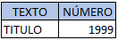
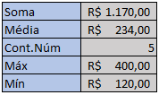
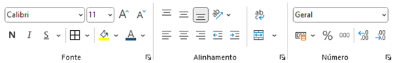
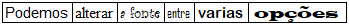
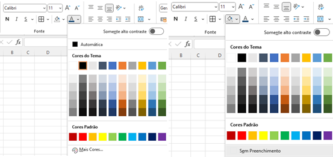
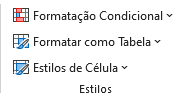

Inserção e Manipulação de Dados
Para inserir os dados, você deve selecionar a célula que receberá os dados. Em seguida, basta digitar o conteúdo.
1. Tipos de entrada de dados:
- Texto
- Números
- Fórmulas
- Comandos
O Excel determina o tipo de dado com base no primeiro caractere digitado. Por padrão, o Excel alinha: - Texto à esquerda da célula - Números à direita da célula
Exemplo:

2. Inserindo fórmulas simples:
=SOMA(): Utilizado para somar valores das células selecionadas.=MÉDIA(): Utilizado para calcular a média dos valores das células selecionadas.=CONT.NÚM(): Utilizado para contar quantas células possuem números entre as células selecionadas.=MÁXIMO(): Utilizado para identificar o maior valor entre as células selecionadas.=MÍNIMO(): Utilizado para identificar o menor valor entre as células selecionadas.
Atividade prática:
Criando uma tabela com dados fictícios
Exemplo:

- Insira fórmulas para ver resultados na prática.

Essas formulas básicas são uteis para encontrar os valores desejados de forma rápida, sem precisar digitar manualmente um a um todos os valores das células desejadas, poupando tempo quando a base de dados que se irá trabalhar for grande.
3. Formatação de Células
Para efetuar a formatação de células no EXCEL é bem simples, basta selecionar uma faixa da planilha e em seguida aplicar a formatação sobre ela.
Seleção de células: Usando mouse e teclado:
- Com o mouse:
Posicione o cursor na célula inicial, mantenha o botão esquerdo do mouse pressionado e arraste até a célula final. - Com o teclado:
Posicione o retângulo de seleção na célula inicial, pressione a teclaSHIFTe use as setas direcionais para estender a seleção.
4. A barra de formatação:

A barra de formatação concentra os principais elementos de formatação no Excel, divididos em três grupos:
- Formatação de caracteres: Alterar fontes, aplicar negrito ou itálico.
- Alinhamento: Ajustar o alinhamento do conteúdo nas células.
- Formatação numérica: Ajustar formatos de números, como moeda, porcentagem, etc.
5. Estilos básicos de formatação:
Alterar fonte: Aplicar negrito, itálico e mudar o estilo da fonte.
Exemplo:
Cor do texto e fundo da célula: Utilize a paleta de cores.
Exemplo:

Opções para personalização de células A formatação é útil para organizar os dados de uma planilha e facilitar a sua visualização, tornando-a menos poluída e mais agradável.
6. Formatação condicional:
Utilize a formatação condicional para destacar células com base em condições específicas, como valores maiores ou menores que um critério.
1. Selecione o intervalo de células.
Escolha uma regra predefinida (exemplo: realce de cores) ou crie uma nova regra personalizada.
Ajuste os critérios e aplique.

Atividade prática:
Formatar condicionalmente a tabela criada anteriormente com as seguintes condições: - Gastos maiores que R$200,00: Fundo vermelho.
- Gastos menores que R$160,00: Fundo verde.
Exemplo inicial da tabela:
Tabela formatada:

E assim ficou nossa tabela após ser aplicada a formatação condicional, onde os valores R$300,00 e R$400,00 estão com o fundo vermelho, enquanto os valores R$150,00 e R$120,00 estão em verdes, indicando que a formatação funcionou como deveria, e como o valor de R$200,00 não se encaixa em nenhuma condição aplicada, ele permanece na condição padrão. A formatação condicional é útil para organizar os dados quando se trabalha com uma base de dados grande e, nos dando a informação que buscamos sem precisarmos ficar analisando célula por célula, facilitando o trabalho e tornando-o mais rápido e eficaz.